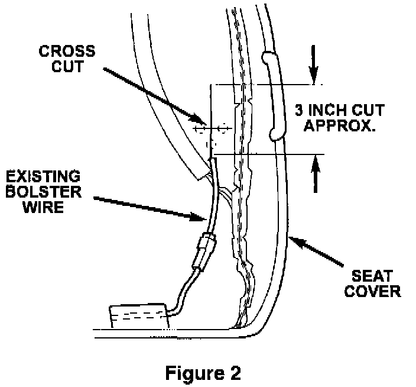
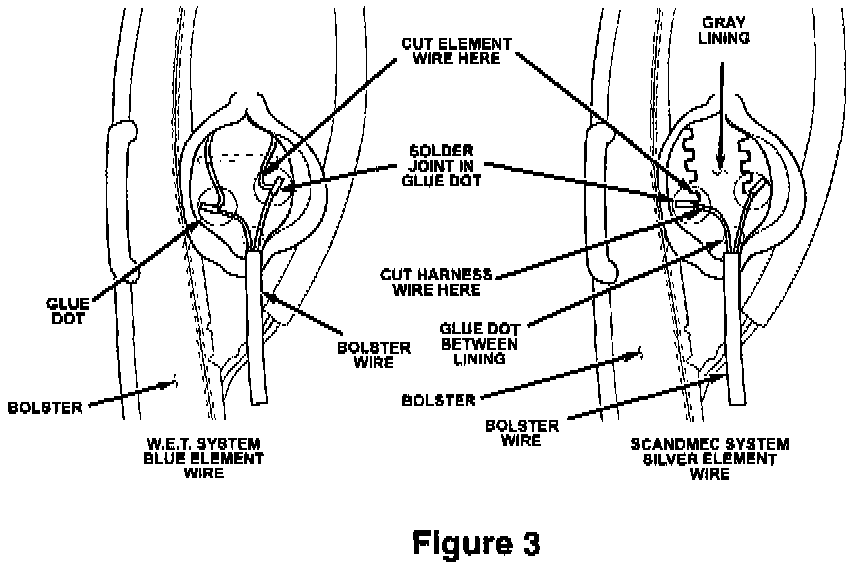
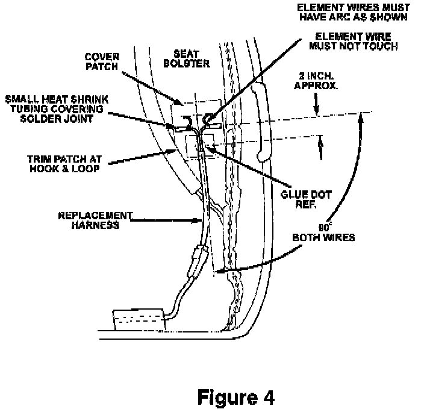
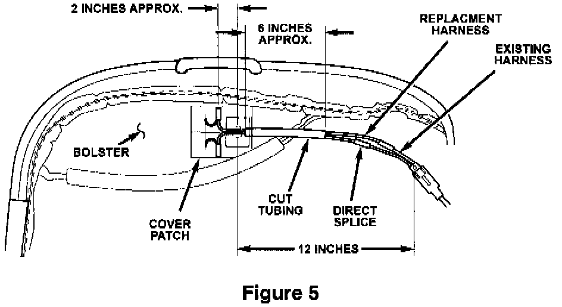

Repair Procedure
1. Position the seatback in the half recline position to gain access to the fasteners.2. Disconnect the wire harness from the seat assembly.
3. Remove the seat attaching nuts and remove the seat from the vehicle.
4. Remove the seat cushion side cover trim.
5. Remove the recliner to seat cushion bolts and inboard seat back to seat cushion bolt. Remove the seat back.
CAUTION:
CARE MUST BE USED WHEN REMOVING THE COVER FROM THE SEAT BOTTOM. THE SEAT IS ATTACHED TO THE FOAM CUSHION WITH HOOK AND LOP FASTENERS. THESE CAN BE TORN WHEN THE COVER IS REMOVED. USE CARE TO CAREFULLY REMOVE THE COVER TO AVOID TEARING THE HOOK AND LOOP FASTENER FROM THE FOAM. IF THE FASTENER IS TORN IT MUST BE ATTACHED TO THE FOAM USING A SUITABLE ADHESIVE SUCH AS MOPAR SPRAY ADHESIVE, P/N 04856957 OR EQUIVALENT.
6. Disengage the seat cover J straps from the frame. Carefully remove the cover from the seat bottom making sure not to damage the hook and loop fastener on the foam cushion.
7. The system contains two heating elements per seat. Unplug the two wire connectors and check the continuity between the two terminals in each connector to determine which heating element is open (See Figure 1). The resistance should be .9 to 1.4 ohms. An infinite resistance indicates an open circuit. Each repair kit will repair one element. It is recommended that both elements be repaired even if only one is open.

8. Trace the wires into the foam and carefully slit the foam using a sharp knife, following the wires until the heating element solder joint is located (See Figure 2). This is the location the open circuit is usually found. Cut the harness from the element as close to the solder joint as possible. If the seat cover has a gray lining, it may be necessary to trim some of the fabric around the glue until the element is exposed. Remove all loose debris. It is not necessary to remove the glue from the cover. Do not discard the original harness. Some vehicles will require the use of the original two wire connector later.

9. There were two types of heating element used in production (See Figure 3). One has insulation on the wire and one does not. If the element has insulation on the wire, carefully strip one inch of the insulation from the element to allow for soldering. Pull the elements away from the cover enough to clear the foam for soldering. Trim the foam as necessary to provide adequate clearance for soldering.

10. The soldering procedure requires a technician skilled in soldering fine electrical/electronic wiring. Using a soldering iron and rosin core, solder the new harness to the heating element as shown in Figure 4. Do not use any soldering equipment utilizing an open flame for this procedure. This could damage the foam cushion. Make sure utilize the proper soldering procedures and heat the wire hot enough to melt the solder to avoid a cold solder joint. Cut piece of heat shrink tubing in half and install it on the wire as shown. Shrink the tubing using a heat gun.
11. Peel of the paper backing from the adhesive patch on the new harness and secure the harness to the cover as shown. The elements require at least one inch clearance between each other to eliminate the possibility of them shorting together. Make sure to route the wires as shown and install the cover patch to fully secure the new harness to the cover. Trim the cover patch as necessary to clear the hook and loop fasteners.

12. The new harness will plug into most of the existing seat harnesses. Some vehicles utilized a red insulator, which is keyed differently than the green insulator provided on the new harness. If the vehicle utilizes the red connector, it will have to be removed from the original harness and installed on the new harness using solder and heat shrink tubing as shown in Figure 5. Be sure to stagger the splices as shown.
13. Check continuity at both of the two wire connectors to assure good solder joint.
14. Repeat this process for the second heating element.
15. Install the seat cover to the seat bottom.
16. Install the seat back.
17. Install the seat and connect the harness.